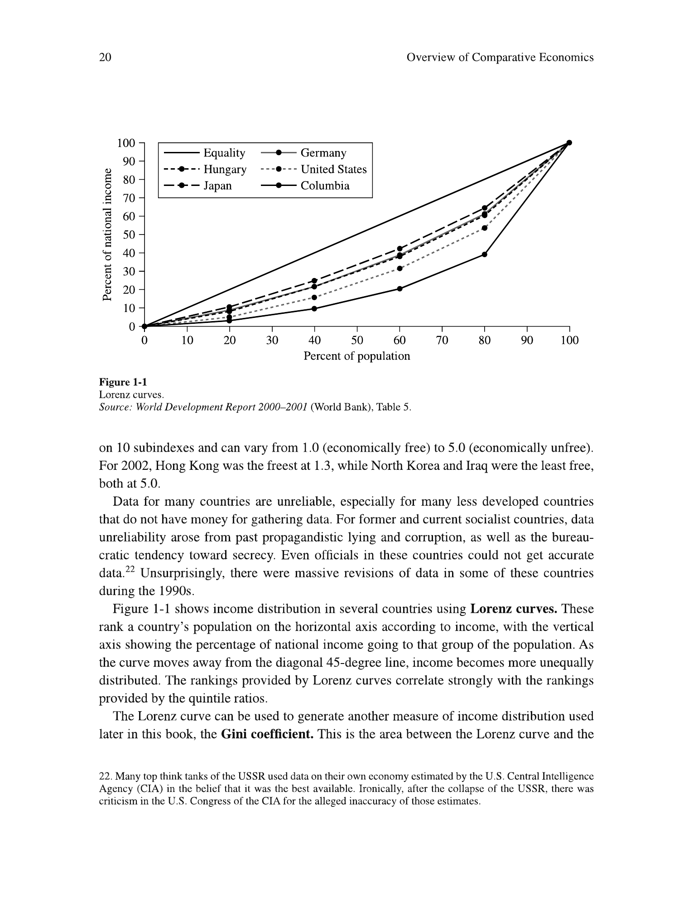

Compare performance with explicit criteria and qualified evidence
Useful first: Classify economic systems across distinct dimensions
Lesson outline
- 02IntroductionSee the main question, learning objectives and prerequisites.
- 03Key definitions and conceptsGet familiar with the important terms and notation.
- 04Comparing performance: define the outcome firstRosser and Rosser use nine evaluation criteria drawn from Bornstein.
- 05Why a striking comparison may still misleadExplore why a striking comparison may still mislead.
- 06Reading the chapter's evidenceRosser and Rosser use nine evaluation criteria drawn from Bornstein.
- 07Reading the chapter's evidenceExplore reading the chapter's evidence.
- 08Why a striking comparison may still misleadExplore why a striking comparison may still mislead.
- 09Connect the reasoningExplore connect the reasoning.
- 10Worked exampleFollow a complete application of the reasoning.
- 11Practise the reasoningWork through written tasks, with optional support and solutions.
- 12Check your reasoning: an offline quizCheck your choices and see feedback without a connection.
- 13Check your understandingReview the key distinctions and check what you can explain.
- 14Test yourself laterTry another prepared question before rereading.
- 15SourcesFind the materials and limits behind the lesson.
Introduction
In this lesson, compare performance with explicit criteria and qualified evidence.
2.1 What you’ll learn
- For given historical or hypothetical indicators, choose and name the nine performance criteria
- Distinguish average output, distribution and static/dynamic efficiency
- Interpret a Lorenz area ratio
- State precisely why a ranking or causal claim exceeds the evidence.
2.2 Before you begin
Check the foundations
A public firm has higher output per person than a private firm. Which is an institutional feature and which an outcome? Does ownership identify the cause?
Reveal foundation explanation
public/private is ownership; per-person output is an outcome; the pair does not isolate causation.
Key definitions and concepts
- Lorenz curve: Cumulative income against cumulative poorest-to-richest population.
- Gini coefficient: The Lorenz gap area divided by the equality-triangle area.
- Performance criterion: An explicit dimension used to compare economic outcomes.
Comparing performance: define the outcome first
Rosser and Rosser use nine evaluation criteria drawn from Bornstein. Output level is real output per person, adjusted for population and prices; it approximates average material living standards, not distribution or freedom. Growth is the change in output per person, so population growth must be removed before comparing living standards over time. Composition asks what is produced and how much output goes to consumption, investment, military use, or public goods. Static efficiency concerns using available resources and technology well at a point in time; Pareto efficiency means no feasible reallocation makes someone better off without making someone else worse off.
It does not imply an equitable distribution. Dynamic efficiency concerns choices over time, including whether current extraction or investment undermines future output; the chapter's Soviet oil-well example illustrates the distinction from maximizing current production.
The growth criterion needs a mechanism as well as a rate. Rosser and Rosser argue that the poorest economies may have too little surplus after subsistence consumption to invest, while economies that have escaped that trap can adopt existing frontier technology and catch up.
The richest economies must push the technological frontier itself, so their growth opportunity differs. The chapter says command socialist systems sometimes achieved rapid growth for extended periods but tended toward longer-run stagnation.
These are historical tendencies in the authors' account, not predictions from a country's label alone.
The remaining criteria are macroeconomic stability of output, employment, and prices; individual economic security, including jobs and health care; equity in income and wealth; and freedom to work, consume, own, invest, and exercise civil and political rights.
Rosser and Rosser say strict command systems are often credited with short-run stability, but note major exceptions, including instability in surviving command systems after the Soviet breakup. A country can score differently on each criterion.
A single ranking therefore requires value judgments about how to weigh these outcomes. The book also cautions against assuming an unavoidable equality–growth trade-off: it gives historical examples of relatively equal, fast-growing economies and unequal, slow-growing ones.
Those examples question a simple rule; they do not prove that any specific redistribution policy raises growth.
4.1 Reading the chapter's evidence

Table 1-1 lists 25 economies grouped by the book's system categories. Its indicators include purchasing-power-adjusted GDP per person in 2000, annual average per-person growth and consumer-price inflation generally over 1990–2000, investment share, a top-to-bottom income-quintile ratio, life expectancy, and the Human Development Index (HDI).
The HDI combines real income per person, life expectancy, adult literacy, and educational enrollment on a 0–1 scale, with higher values indicating greater measured development. Read the footnote before treating columns as simultaneous: Cuba's growth covers 2000–01, New Zealand's and Cuba's inflation use other sources or periods, and several other indicators have different reference years.
The table is a dated cross-country comparison with missing values and mixed measurement quality; it cannot by itself isolate the effect of an allocation or ownership rule.

Table 1-2 reports central-government expenditure and taxes, plus central-government military, education, and health spending, each as a percentage of GDP. It also gives an Economic Freedom Index whose source scale runs from 1 (freer) to 5 (less free).
Its columns draw on different years, as the source note explains; the values should not be read as current or perfectly synchronized.
For a concrete comparison, Table 1-1 gives 2000 GDP per person of \(\$34{,}142\) for the United States and \(\$24{,}277\) for Sweden, but similar HDI values of \(0.939\) and \(0.941\) and different top/bottom quintile ratios of \(9.0\) and 3.6. Table 1-2 reports central-government expenditure of \(21.1\%\) and \(42.7\%\) of GDP, respectively, in its source period.
The pair illustrates how rankings vary by criterion and institutional arrangement; it does not establish that spending caused the observed HDI or distribution.

Figure 1-1 plots cumulative population ranked from poorest to richest on the horizontal axis against cumulative national income on the vertical axis. Equal income would trace the 45-degree line;
a curve farther below it indicates greater inequality. The Gini coefficient is defined as the area between the equality line and a country's Lorenz curve divided by the whole area under the equality line, ranging from 0 (equal) toward 1 (maximally unequal in the limiting case).
This converts the picture to one number, but neither the curve nor Gini identifies why inequality arose or whether an observed distribution is just. The figure's named countries and data are historical.
The chapter explicitly warns that data may be especially weak in poorer countries and in former command systems, where secrecy, reporting incentives, and later revisions complicate comparisons. System classifications themselves are partly arbitrary: openness, industry structure, law, corruption, trust, population density, and other features can matter even when two countries share a headline label.
Use the tables to form precise questions, not to treat a category average as a causal estimate.
Why a striking comparison may still mislead

Austria–Czechoslovakia comparison. The chart plots GDP per person in 1990 international Geary–Khamis dollars over 1820–2010 using the Maddison Project 2013 version. The visible gap later in the series motivates a question about divergent institutions and systems.
It does not isolate a causal effect of socialism: war, borders, industrial structure, measurement, and other historical differences also require analysis. The slide retains a “Czecho-slovakia” series for 2000 and 2010, after the state's dissolution, without explaining how those observations were constructed.
Read its units, source date, and this labeling limit before using it as evidence.

Germany measurement example. For 1950–1989, the slide reports West German GNP and GNP-per-person growth figures of \(4.2\) and \(3.6\), while its East German official NMP series reports \(5.6\) and 5.9. Two re-estimates of East German GNP using different 1989 Mark/DM conversions report \(1.6\)/\(1.9\) and \(-2.2\)/\(-1.9\) respectively.
The table's labels do not print a unit for these rates, and NMP and GNP are different aggregates. The key lesson is sensitivity to accounting and conversion, not a precise uncontested ranking from unlike numbers.
The lecture surveys geography, culture, and leaders' ignorance as proposed explanations of prosperity, then poses Nogales and other counterexamples to simple one-factor accounts. It argues that trust and cooperation can themselves be shaped by institutions.
These examples show why competing explanations must be examined; they do not mean geography or culture never matters.
The Nogales and colonial-history note explains the uploaded chapter's own evidence and its limits in detail.
Finally, the lecture's Lagos insecurity scenario, Adam Smith quotation, and China discussion all point to the same decision mechanism: if property claims, contract enforcement, or predictable treatment are doubtful, an investor has reason to protect or conceal resources, seek personal connections, or use shorter-horizon opportunities. The China slide specifically names inconsistent rules, weak independent judicial checks, and reliance on guanxi networks;
those are lecturer claims for discussion, not a blanket characterization of every Chinese transaction. The uploaded Roland chapter explains the contracting problems behind that intuition. Institutions and economic development

The lecture's final example is a screenshot of a September 2024 article describing a debated practice in which a relative's conviction can restrict access to certain public jobs, university programs, or military service. It illustrates an indirect effect of legal rules on people who were not convicted and why households may care about predictability and equal application.
The screenshot reports nearly 25 million recorded offenders during 2000–2022 and states that some 100 million people could be at risk if each has three affected relatives. That multiplication gives about 75 million relative instances before any overlap;
the article does not explain the difference. Neither number is an observed count of people actually penalized.
The slide presents this as an article excerpt, not as independently verified course data.
Reading the chapter's evidence
Read the full checked source context
Rosser and Rosser use nine evaluation criteria drawn from Bornstein. Output level is real output per person, adjusted for population and prices; it approximates average material living standards, not distribution or freedom. Growth is the change in output per person, so population growth must be removed before comparing living standards over time. Composition asks what is produced and how much output goes to consumption, investment, military use, or public goods. Static efficiency concerns using available resources and technology well at a point in time; Pareto efficiency means no feasible reallocation makes someone better off without making someone else worse off.
It does not imply an equitable distribution. Dynamic efficiency concerns choices over time, including whether current extraction or investment undermines future output; the chapter's Soviet oil-well example illustrates the distinction from maximizing current production.
The growth criterion needs a mechanism as well as a rate. Rosser and Rosser argue that the poorest economies may have too little surplus after subsistence consumption to invest, while economies that have escaped that trap can adopt existing frontier technology and catch up.
The richest economies must push the technological frontier itself, so their growth opportunity differs. The chapter says command socialist systems sometimes achieved rapid growth for extended periods but tended toward longer-run stagnation.
These are historical tendencies in the authors' account, not predictions from a country's label alone.
The remaining criteria are macroeconomic stability of output, employment, and prices; individual economic security, including jobs and health care; equity in income and wealth; and freedom to work, consume, own, invest, and exercise civil and political rights.
Rosser and Rosser say strict command systems are often credited with short-run stability, but note major exceptions, including instability in surviving command systems after the Soviet breakup. A country can score differently on each criterion.
A single ranking therefore requires value judgments about how to weigh these outcomes. The book also cautions against assuming an unavoidable equality–growth trade-off: it gives historical examples of relatively equal, fast-growing economies and unequal, slow-growing ones.
Those examples question a simple rule; they do not prove that any specific redistribution policy raises growth.
Reading the chapter's evidence
Read the full checked source context
Table 1-1 lists 25 economies grouped by the book's system categories. Its indicators include purchasing-power-adjusted GDP per person in 2000, annual average per-person growth and consumer-price inflation generally over 1990–2000, investment share, a top-to-bottom income-quintile ratio, life expectancy, and the Human Development Index (HDI).
The HDI combines real income per person, life expectancy, adult literacy, and educational enrollment on a 0–1 scale, with higher values indicating greater measured development. Read the footnote before treating columns as simultaneous: Cuba's growth covers 2000–01, New Zealand's and Cuba's inflation use other sources or periods, and several other indicators have different reference years.
The table is a dated cross-country comparison with missing values and mixed measurement quality; it cannot by itself isolate the effect of an allocation or ownership rule.
Table 1-2 reports central-government expenditure and taxes, plus central-government military, education, and health spending, each as a percentage of GDP. It also gives an Economic Freedom Index whose source scale runs from 1 (freer) to 5 (less free).
Its columns draw on different years, as the source note explains; the values should not be read as current or perfectly synchronized.
For a concrete comparison, Table 1-1 gives 2000 GDP per person of \(\$34{,}142\) for the United States and \(\$24{,}277\) for Sweden, but similar HDI values of \(0.939\) and \(0.941\) and different top/bottom quintile ratios of \(9.0\) and 3.6. Table 1-2 reports central-government expenditure of \(21.1\%\) and \(42.7\%\) of GDP, respectively, in its source period.
The pair illustrates how rankings vary by criterion and institutional arrangement; it does not establish that spending caused the observed HDI or distribution.
Figure 1-1 plots cumulative population ranked from poorest to richest on the horizontal axis against cumulative national income on the vertical axis. Equal income would trace the 45-degree line;
a curve farther below it indicates greater inequality. The Gini coefficient is defined as the area between the equality line and a country's Lorenz curve divided by the whole area under the equality line, ranging from 0 (equal) toward 1 (maximally unequal in the limiting case).
This converts the picture to one number, but neither the curve nor Gini identifies why inequality arose or whether an observed distribution is just. The figure's named countries and data are historical.
The chapter explicitly warns that data may be especially weak in poorer countries and in former command systems, where secrecy, reporting incentives, and later revisions complicate comparisons. System classifications themselves are partly arbitrary: openness, industry structure, law, corruption, trust, population density, and other features can matter even when two countries share a headline label.
Use the tables to form precise questions, not to treat a category average as a causal estimate.
Why a striking comparison may still mislead
Read the full checked source context
Austria–Czechoslovakia comparison. The chart plots GDP per person in 1990 international Geary–Khamis dollars over 1820–2010 using the Maddison Project 2013 version. The visible gap later in the series motivates a question about divergent institutions and systems.
It does not isolate a causal effect of socialism: war, borders, industrial structure, measurement, and other historical differences also require analysis. The slide retains a “Czecho-slovakia” series for 2000 and 2010, after the state's dissolution, without explaining how those observations were constructed.
Read its units, source date, and this labeling limit before using it as evidence.
Germany measurement example. For 1950–1989, the slide reports West German GNP and GNP-per-person growth figures of \(4.2\) and \(3.6\), while its East German official NMP series reports \(5.6\) and 5.9. Two re-estimates of East German GNP using different 1989 Mark/DM conversions report \(1.6\)/\(1.9\) and \(-2.2\)/\(-1.9\) respectively.
The table's labels do not print a unit for these rates, and NMP and GNP are different aggregates. The key lesson is sensitivity to accounting and conversion, not a precise uncontested ranking from unlike numbers.
The lecture surveys geography, culture, and leaders' ignorance as proposed explanations of prosperity, then poses Nogales and other counterexamples to simple one-factor accounts. It argues that trust and cooperation can themselves be shaped by institutions.
These examples show why competing explanations must be examined; they do not mean geography or culture never matters.
The Nogales and colonial-history note explains the uploaded chapter's own evidence and its limits in detail.
Finally, the lecture's Lagos insecurity scenario, Adam Smith quotation, and China discussion all point to the same decision mechanism: if property claims, contract enforcement, or predictable treatment are doubtful, an investor has reason to protect or conceal resources, seek personal connections, or use shorter-horizon opportunities. The China slide specifically names inconsistent rules, weak independent judicial checks, and reliance on guanxi networks;
those are lecturer claims for discussion, not a blanket characterization of every Chinese transaction. The uploaded Roland chapter explains the contracting problems behind that intuition. Institutions and economic development
The lecture's final example is a screenshot of a September 2024 article describing a debated practice in which a relative's conviction can restrict access to certain public jobs, university programs, or military service. It illustrates an indirect effect of legal rules on people who were not convicted and why households may care about predictability and equal application.
The screenshot reports nearly 25 million recorded offenders during 2000–2022 and states that some 100 million people could be at risk if each has three affected relatives. That multiplication gives about 75 million relative instances before any overlap;
the article does not explain the difference. Neither number is an observed count of people actually penalized.
The slide presents this as an article excerpt, not as independently verified course data.
Connect the reasoning
- State the outcome, denominator and period before ranking. Growth in total output is not per-person growth if population changes. Composition, stability, security and freedom are not captured by average GDP.
- Read units and footnotes: Rosser Table 1-1 mostly uses GDP per person in 2000 and rates over 1990–2000, with exceptions. HDI is the historical source’s income/longevity/literacy/enrollment combination on 0–1. Table 1-2 spending entries are percentages of GDP; its Economic Freedom Index runs 1 freer to 5 less free. These are dated definitions/data.
- Calculate Gini using consistent area units, then interpret the inequality direction; no absolute income or moral judgment follows.
- Compare criteria without inventing weights: US/Sweden may rank differently on GDP, HDI and quintile ratios. The notes reject an inevitable equality–growth trade-off; historical examples do not estimate a redistribution policy effect.
- Audit comparability: German NMP differs from GNP and conversion rates change re-estimates. Austria–Czechoslovakia GDP units are 1990 international Geary–Khamis dollars, and the post-dissolution series labeling is unexplained. Dated/missing/mixed-quality data and historical differences prevent an isolated causal estimate. The article’s offender/relative arithmetic concerns possible instances rather than observed penalties.
- Historical growth accounts involve subsistence limiting investment, catch-up adopting existing technology, and frontier innovation; command growth/stagnation and stability claims have exceptions. Treat them as source mechanisms/tendencies, not predictions from a label.
Worked example
10.1
Use the note’s historical US/Sweden pair: GDP/person \(\$34{,}142\)/\(\$24{,}277\) in 2000; HDI \(0.939\)/\(0.941\); top/bottom income-quintile ratio \(9.0\)/\(3.6\); central spending \(21.1\%\)/\(42.7\%\) GDP from Table 1-2’s source period. Add a hypothetical Lorenz gap area \(0.15\) with equality-triangle area \(0.50\). Interpret all nine performance criteria and the data limits.
Solution: GDP ranks US higher in average material output; HDI and quintile ratios favor Sweden on measured development/equity;
spending is an institutional/fiscal indicator, not proof of its effect. Nine criteria remain output, per-person growth, composition, static efficiency, dynamic efficiency, stability, security, equity and freedom;
unreported criteria cannot be ranked. \(\mathrm{Gini}=0.15/0.50=0.30\), descriptive inequality. Axes are cumulative poorest-to-richest population and income;
lower curves mean more inequality. Static efficiency is present use, dynamic future consequences;
neither is established by GDP or Gini. Different dates, definitions and confounders forbid “spending caused HDI.” The source’s freedom scale runs downward toward greater freedom, and the historical data are not current.
Practise the reasoning
Write your reasoning before revealing an explanation. Begin with support, then apply the ideas to another situation.
11.1 Written exercise 1
Completion: Hypothetical economies P/Q have equal GDP per person, but P has Lorenz gap \(0.10\) and Q \(0.20\), both over a \(0.50\) equality triangle.
Solve the following:
- List nine criteria, fill Ginis, distinguish static/dynamic efficiency, and assess “equal output means equally good systems.” Include one dated-unit and one causal caveat.
Show a hint
Pause before calculating or choosing an explanation:
- What quantities, actors or outcomes are being compared? Write their roles, units and dates beside them.
- Which condition decides whether the relationship applies? Check the relevant definition before using a formula or classifying the case.
- What would have to remain fixed for your comparison to be meaningful? Work through one link in the reasoning at a time.
- How could you check the direction, boundary case or alternative explanation before stating your conclusion?
A local draft for your own study.
Reveal explanation
Solution: Ginis are \(0.20\)/\(0.40\); Q is more unequal on these distributions.
Nine criteria: output, per-person growth, composition, static/dynamic efficiency, macro stability, individual security, equity, freedom. Equality in output leaves the others open.
Static concerns current use; dynamic future consequences;
neither implies fairness. Need matching price/population/period definitions, with historical indicators not live data.
The pair does not isolate institutional cause; weighting outcomes is a value choice.
11.2 Written exercise 2
Use the historical US/Sweden figures from W1, supplied here: GDP/person \(34{,}142\)/\(24{,}277\);
Solve the following:
- HDI \(.939\)/\(.941\);
- quintile ratios \(9\)/\(3.6\);
- spending \(21.1\)/\(42.7\%\) GDP.
- A hypothetical Lorenz gap is \(.20\) over .50.
- Name nine performance criteria, distinguish static/dynamic efficiency, compute/interpret Gini and its axes, rank what can be ranked, and give measurement and causal limits including freedom-scale direction.
A local draft for your own study.
Reveal explanation
Solution: Nine: output, per-person growth, composition, static/dynamic efficiency, macro stability, individual security, equity, freedom. Static concerns current resource/technology use;
dynamic future output; Pareto does not mean equal.
US higher GDP; Sweden higher HDI/lower quintile disparity;
other criteria unranked. Gini \(.40\);
cumulative poorest-to-richest population \(x\)/income \(y\), lower curve more inequality; no justice/cause inference.
Data are historical/mixed periods; spending %GDP differs from outcome;
freedom index 1 freer/5 less free. No controlled spending or ownership effect is isolated, and weighting criteria is a value decision.
11.3 Written exercise 3
Hypothetical A/B: same GDP/person;
Solve the following:
- A grows faster per person, but B has more stable employment and a lower Lorenz curve.
- Gap area for B is \(.25\), equality area \(.50\).
- Name all nine criteria and static/dynamic meanings;
- interpret B’s curve/Gini;
- critique ranking B “best” and reading East German official NMP \(5.6\) against West GNP \(4.2\) as a causal ranking.
- State the source freedom-index direction.
A local draft for your own study.
Reveal explanation
Solution: Nine as above; A wins stated per-person growth, B employment stability, B’s lower curve means greater inequality with Gini \(.50\).
Equal GDP leaves composition, efficiency, security and freedom unmeasured; static/current and dynamic/future efficiency cannot be inferred, and equity differs from Pareto efficiency.
No “best” ranking without value weights. NMP/GNP are unlike aggregates;
table units are not printed and conversion/re-estimates change comparison; historical/mixed data do not identify causation.
Freedom-index 1 freer to 5 less free. Need matching units/periods and contextual causes.
11.4 Another chance to practise
Fresh correction: same GDP, gap \(.18\) over \(.50\) versus \(.08\) over .50.
Solve the following:
- Which Gini is larger and what does it say?
A local draft for your own study.
Reveal explanation
\(.36\) versus \(.16\); first is more unequal, not necessarily poorer on average or unjust by definition.
11.5 Another chance to practise
Fresh correction: one chart uses a historical GDP series and labels a dissolved state after dissolution.
Solve the following:
- What two checks precede a causal claim?
A local draft for your own study.
Reveal explanation
Check construction of the post-dissolution observations and comparable units/periods; then assess historical confounders rather than infer cause from the gap.
Check your reasoning: an offline quiz
Choose one answer per question. Check individual answers or check the whole quiz. Each option includes feedback on the reasoning, and everything works offline.
Reveal explanation
Divide 0.15 by 0.50.
Reveal explanation
Name the criteria and retain dates/definitions before interpreting the comparison.
Reveal explanation
A system comparison needs an explicit performance concept, not a single proxy.
Check your understanding
A common mistake: says a lower Lorenz curve means less inequality or confuses GDP with distribution.
Cumulative income of the poorest shares is smaller when the curve is lower; its gap from equality is larger. GDP per person is an average and cannot identify distribution.
A comparison must align aggregates/units/periods before even describing differences; other historical factors remain.
- For given historical or hypothetical indicators, choose and name the nine performance criteria
- Distinguish average output, distribution and static/dynamic efficiency
- Interpret a Lorenz area ratio
- State precisely why a ranking or causal claim exceeds the evidence.
Test yourself later
Return to these questions after a break, before rereading the explanation. Use a question you have not just viewed.
14.1 Review question 1
Hypothetical R/S: R has higher output per person, S higher HDI and a higher Lorenz curve.
Solve the following:
- S gap \(.05\) over equality area \(.50\).
- Name nine criteria and static/dynamic efficiency, interpret curve/Gini and HDI, identify what cannot be ranked, then critique using the historical Austria–Czechoslovakia chart as proof of socialism’s causal effect.
- Include freedom-index direction.
A local draft for your own study.
Reveal explanation
Solution: Nine performance criteria as above; R output ranking, S measured development/equity ranking;
S Gini \(.10\), axes cumulative poorest-to-richest population/income, higher curve nearer equality. Historical HDI uses income, life expectancy, literacy/enrollment;
it omits many criteria. Static/current use and dynamic/future consequences differ and neither guarantees equity.
Need values to aggregate criteria. Chart is historical in 1990 international Geary–Khamis dollars, Maddison 2013 series;
post-dissolution labeling unexplained; war, borders/industry/measurement confound inference.
Freedom index 1 freer/5 less free; no isolated socialism effect.
14.2 Review question 2
Hypothetical U/V: U has higher current output but depletes resources, V has greater economic security, equal growth and smaller Lorenz gap.
Solve the following:
- V gap \(.125\) over .50.
- Name nine criteria and efficiency meanings;
- compute/interpret Gini, state unknown rankings, and explain why a historical report of 25 million offenders times three relatives cannot establish 100 million people actually penalized.
- Include unit/date and freedom-scale caveats.
A local draft for your own study.
Reveal explanation
Solution: Nine criteria as above; current output and dynamic consequences can differ, security differs from macro stability, and static/Pareto efficiency does not establish justice.
V Gini \(.25\); cumulative poorest-to-richest population/income and smaller gap imply less inequality;
absolute living standards not identified by Gini. Other ranks/aggregate “best” require data/value weights. \(25\text{ million}\times3=75\text{ million}\) relative instances before overlap, not unique persons or observed penalties;
report’s 100m discrepancy unexplained. Historical dates, %GDP spending, noncurrent HDI definitions need footnotes;
freedom index 1 freer/5 less free. No causal effect from the report or pair.
Sources
Show materials and lesson scope
- Rosser & Rosser, PDF pp. 13–15 (printed pp. 15–17)
- Rosser & Rosser, PDF p. 14 (printed p. 16)
- Rosser & Rosser, PDF pp. 10–11, 15 (printed pp. 12–13, 17)
- Rosser & Rosser, PDF pp. 15–16 (printed pp. 17–18), Table 1-1 and source note
- Rosser & Rosser, PDF pp. 16–17 (printed pp. 18–19), Tables 1-1 and 1-2 with source notes
- Rosser & Rosser, PDF pp. 18–19 (printed pp. 20–21), Figure 1-1
- Rosser & Rosser, PDF pp. 18–19 (printed pp. 20–21)
- Week I lecture, PDF slide 40
- Week I lecture, PDF slide 41, table attributed there to Pohl (1991)
- Week I lecture, PDF slides 37–43
- Week I lecture, PDF slides 46–52
- Week I lecture, PDF slide 52
Numerical and contextual illustrations are hypothetical unless explicitly described as a reported result. Historical data, model assumptions and unresolved source differences retain their stated limits.
These exercises are for self-study. Viewing a prepared item or solution may make that item unsuitable as a fresh check in a tutor chat. This page does not record an assessed learning result.